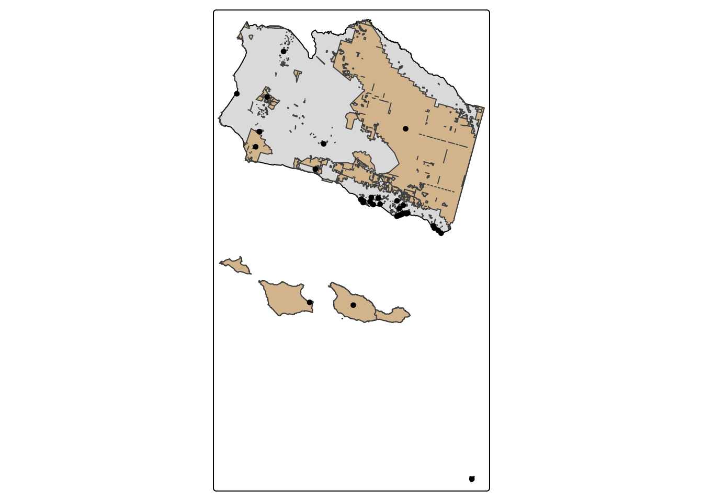

# We can use x[y,] to grab the observations associated with birds in protected_areas
birds_protected <- protected_areas[birds,]
dim(birds_protected) # There are 35 birds in the protected areas[1] 35 25tm_shape(county) + tm_fill(col = "black") + # basemap
tm_shape(protected_areas) + tm_polygons(fill = "tan") +
tm_shape(birds_protected) + tm_dots()